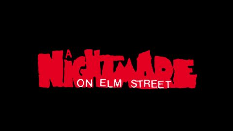

A Nigtmare on Elm Street (Pesadilla en la calle Elm)

Varios jovenes de una pequeña localidad sufren
pesadillas constantes en las cuales un hombre
con la cara deformada por quemaduras de fuego y
guantes terminados en cuchillas
los atormenta llendo tras ellos
y algunos llegando a ser asesinados durante sueños
por aquel hombre el cual sus padres fueron
responsables del incendio tras descubrir que habia asesinado a varios niños.
Se logra conocer el nombre de el
asesino el cual es "Freddy Krueger"